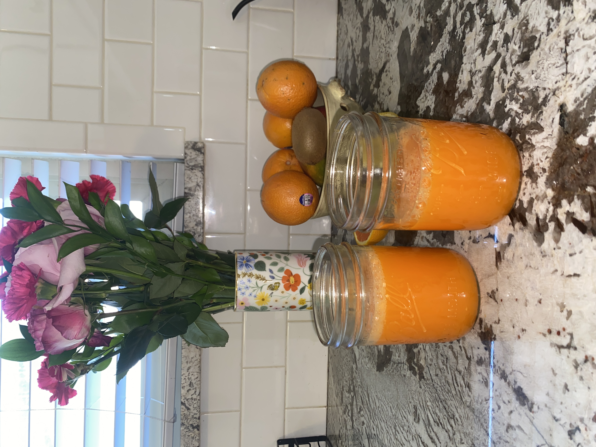

Orange Carrot Juice
Back to Main Page

Ingredients
1/2 cup to 1 cup chopped pineapple
1-2 carrots
Juice of one lemon
Juice of one orange
1-inch knob fresh turmeric
optional: 1-inch knob fresh ginger
Instructions
Blend all ingredients.
Seperate the juice from the pulp using a cheesecloth.